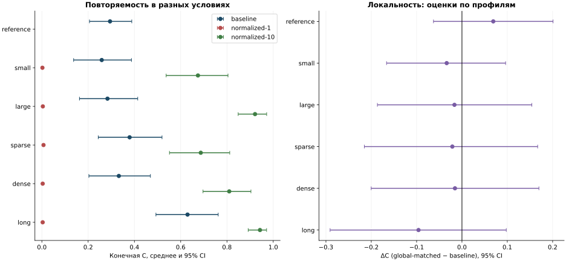

1400 запусков; seed — независимая единица. Средние и описательные bootstrap 95% CI.

| profile | baseline | normalized-1 | normalized-10 | global | global-matched | resource-poor | resource-rich |
|---|---|---|---|---|---|---|---|
| reference | 0.295 [0.206; 0.389] | — | — | 0.307 [0.215; 0.402] | 0.364 [0.268; 0.463] | 0.414 [0.314; 0.514] | 0.320 [0.231; 0.414] |
| small | 0.259 [0.137; 0.387] | 0.002 [0.001; 0.004] | 0.675 [0.537; 0.804] | 0.347 [0.221; 0.482] | 0.225 [0.121; 0.340] | — | — |
| large | 0.284 [0.163; 0.414] | 0.004 [0.003; 0.005] | 0.921 [0.849; 0.972] | 0.213 [0.105; 0.334] | 0.267 [0.149; 0.398] | — | — |
| sparse | 0.379 [0.244; 0.519] | 0.007 [0.005; 0.010] | 0.687 [0.552; 0.812] | 0.394 [0.260; 0.531] | 0.358 [0.231; 0.493] | — | — |
| dense | 0.333 [0.203; 0.469] | 0.004 [0.003; 0.004] | 0.810 [0.696; 0.904] | 0.205 [0.088; 0.325] | 0.317 [0.181; 0.460] | — | — |
| long | 0.630 [0.493; 0.762] | 0.004 [0.002; 0.005] | 0.943 [0.892; 0.971] | 0.528 [0.385; 0.670] | 0.534 [0.389; 0.677] | — | — |
normalized-1: положительная оценка в 0/5 профилях, отрицательная в 5/5; описательный CI целиком выше нуля в 0, ниже нуля в 5.
normalized-10: положительная оценка в 5/5 профилях, отрицательная в 0/5; описательный CI целиком выше нуля в 5, ниже нуля в 0.
global-matched: положительная оценка в 1/6 профилях, отрицательная в 5/6; описательный CI целиком выше нуля в 0, ниже нуля в 0.
Новая независимая группа baseline: 0.295 [0.206; 0.389], прежняя группа: 0.487 [0.343; 0.631]. Различие средних иллюстрирует неопределенность при мультимодальных исходах; две исходные траектории seed 10001–10002 отдельно воспроизведены новым кодом без изменения CSV.
Оценки разных профилей и исходной/новой групп здесь не объединяются. Проверка не доказывает эволюционную устойчивость, отсутствие эффектов или эквивалентность режимов.
Полные оценки: [summary.csv](summary.csv), [effects.csv](effects.csv).
Первичные CSV, точные исходники и подробные отчеты входят в архив robustness-study-20261102.tar.gz в отдельной ветке datasets/research-20261102 на GitHub.